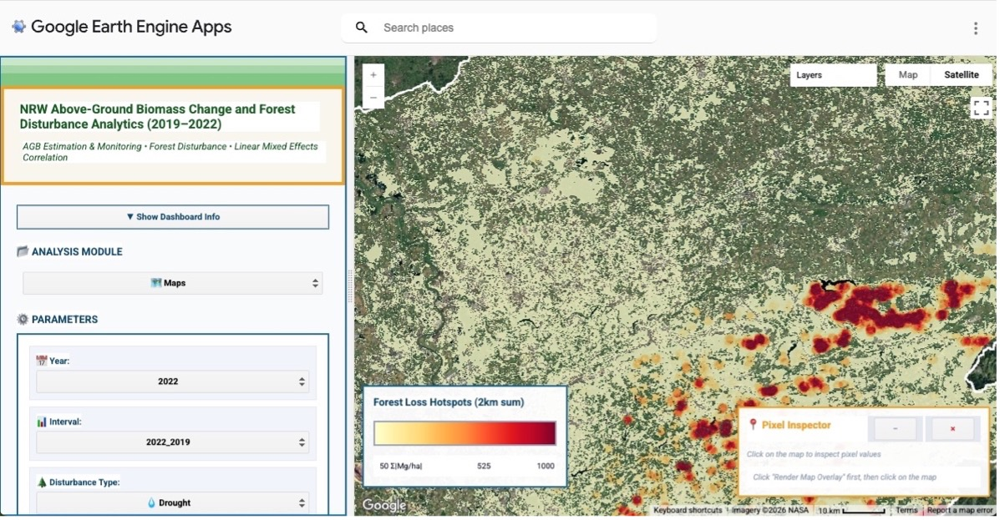
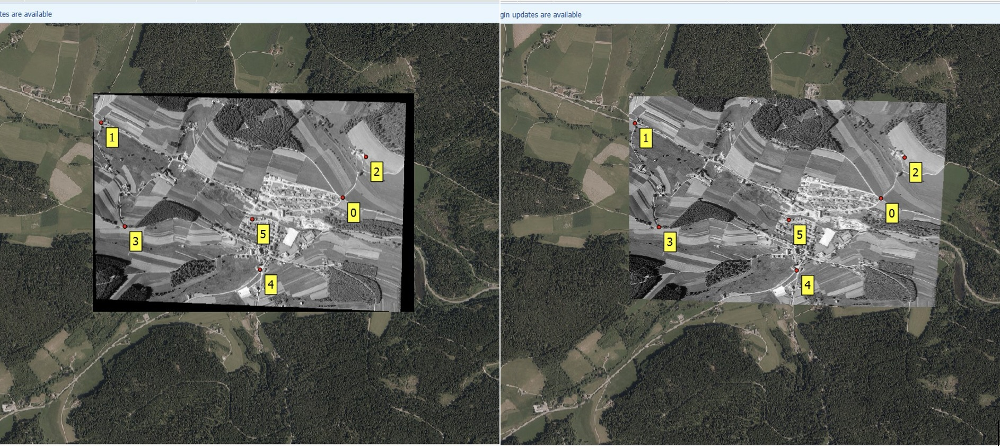
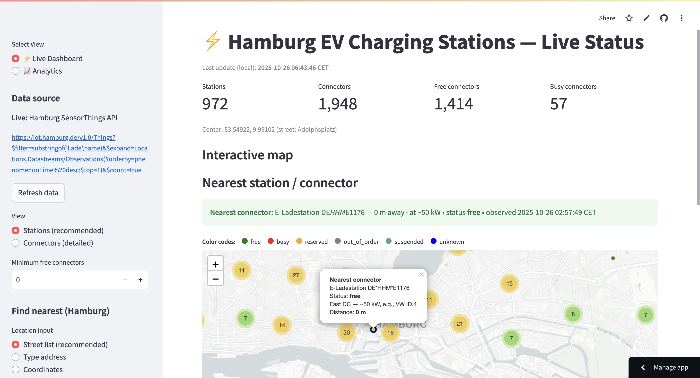
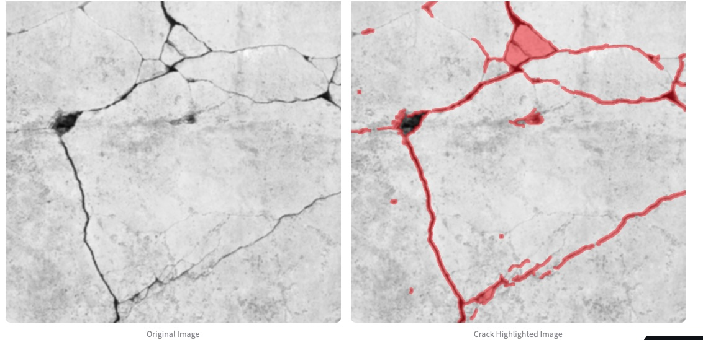
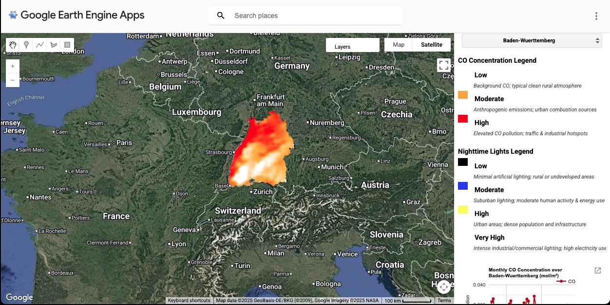
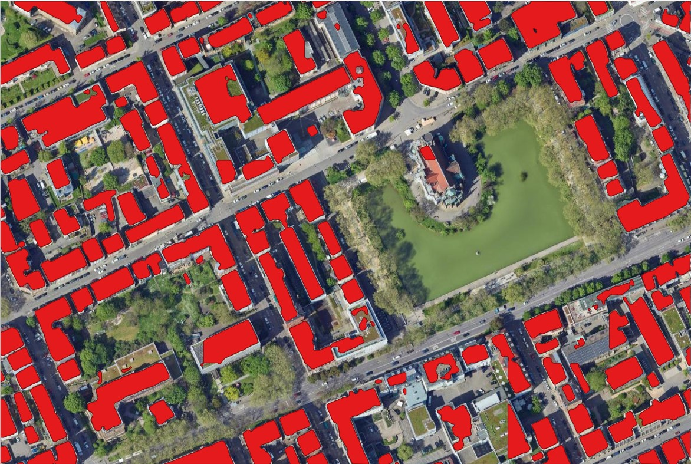
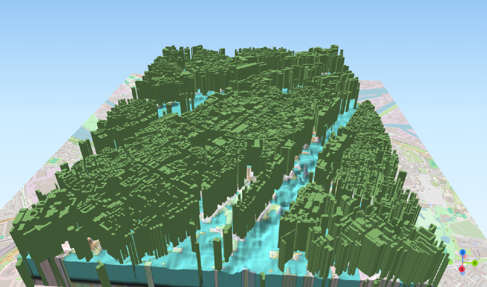

What I've Built
Projects

Spatio-Temporal Above-Ground Biomass Modelling & Forest Disturbances
Challenge:
Forest disturbances rapidly alter where biomass is accumulated, how it is accumulated, and how long it remains stored. However, Traditional monitoring often isolates biomass estimation from forest disturbances which limits our understanding of how disturbances drive AGB loss.
Action:
Fused GEDI LiDAR, Sentinel-1 SAR, and Sentinel-2 under ML algorithms and GroupKfoldspatial cross-validation. Applied LMEM to attribute loss to drought, bark beetle, and logging across NRW at 100 m resolution.
Result:
4 annual wall-to-wall AGB maps validated against ESA-CCI and DLR. Drought identified as dominant driver of biomass loss (β=−5.88). Live GEE dashboard to query and visualize disturbance-driven biomass loss footprints.

QGIS Plugin for Black Frame Removal in Georeferenced Imagery
Challenge:
After georeferencing scanned maps and historical aerial photos, the output raster often contains black frames / borders around the valid image footprint because areas outside the warped image are filled with a background value, usually 0.
Action:
Developed and published a QGIS Plugin (PyQGIS, GDAL, NumPy) that automatically removes black/nodata borders from georeferenced rasters using footprint detection and edge-safe morphology better alternative than the standard Nodata transparency workflow.
Result:
Plugin produces clean GeoTIFFs with optional embedded alpha channel and auto-reloads results into the active QGIS canvas after processing. Outperforms native NoData workflows on all tested imagery types.

Real-Time EV Charging Stations Analytics Using Hamburg SensorThingsAPI Open Data
Challenge:
Hamburg's open EV charging IoT stream had no unified analytics dashboard to track spatial demand, station utilisation, or temporal patterns across the network.
Action:
Built a fully automated and serverless pipeline: GitHub Actions fetches IoT observations every 6 hours and stores in Neon PostgreSQL. Streamlit app renders Folium heatmaps, Plotly time-series and radar charts to show temporal patterns. Every aspect is auto-updated, no manual intervention.
Result:
Live dashboard showing real-time station availability, spatial intensity heatmaps, and top-10 station performance.

Cesium 3D Energy Dashboard & Web AR Scene.
Challenge:
Visualise building-level energy demand across Stöckach in 3D and deliver an interactive Web AR scene using CityGML data with no native web-ready format.
Action:
Converted CityGML to 3DTiles via FME, joined CSV energy data using Feature Joiner, and built a Cesium dashboard with Chart.js styled by energy efficiency bands (kWh/m²). Built a WebXR AR scene with Three.js rendering a georeferenced 3D cube via WebGL.
Result:
Live 3D dashboard with zoom-responsive charts showing heating demand per building. Fully functional Web AR scene which demonstrates end-to-end 3D geospatial web development.

Concrete Crack Detection Using TensorFlow/Keras & Streamlit
Challenge:
Manual concrete inspection is slow, subjective, and cannot quantify crack severity for maintenance prioritisation at scale.
Action:
Trained a CNN (TensorFlow/Keras) on 40,000 images dataset (20k cracked / 20k non-cracked, 120×120 px). Used early stopping, stratified 70/30 split, and ImageDataGenerator for preprocessing.
Result:
Web app: crackdetect-pro.streamlit.app. Outputs crack area in px² and % image coverage per upload and generates downloadable inspection reports.

Urban Carbon Monoxide Monitoring & Nighttime Light Energy Analysis
Challenge:
No sub-national, multi-year spatial comparison of CO pollution and energy-use intensity existed across all 16 German states.
Action:
Integrated Sentinel-5P L2 CO (mol/m²) and VIIRS Nighttime Lights radiance in GEE for 2019–2023. Built interactive JS dropdown app with per-state time-series charts, quantile stretching, and GeoTIFF export.
Result:
Hotspots of High CO and Very High nighttime lights in NRW's industrial west, Berlin, Hamburg, and Stuttgart and other states. Live GEE app deployed for public exploration; GeoTIFF exports enable downstream GIS workflows.

Building Segmentation with Deep Learning in QGIS
Challenge:
Extract building footprints at sub-metre resolution across contrasting urban and rural environments without custom model training infrastructure.
Action:
Deployed pretrained RAMP Segmentor via QGIS Deepness Plugin. Processed 256×256 px tiles at 40 cm and 50 cm across Feuersee and Konradin-Kreutzer Weg.
Result:
50 cm + 256 px tiles confirmed as optimal, capturing 92,119 m² buildings at Feuersee vs 77,159 m² at 40 cm. Before/after swipe videos validate model performance visually.

3D Flood Risk Simulation
Challenge:
Mannheim's proximity to the Rhine and Neckar rivers makes it highly flood-vulnerable. This work simulate inundation and visualize flood-prone areas under low elevation flood conditions.
Action:
Processed DTM/DSM, simulated ≤5 m flood threshold via Raster Calculator, computed building heights via Zonal Statistics, then extruded buildings and flood polygons into interactive 3D using QGIS2ThreeJS.
Result:
Of 11,720 buildings, 7,935 (67.7%) fall within the ≤5 m flood zone. Delivered interactive 3D scenes and video walkthroughs showing inundation extent, with central areas less affected due to elevation planning and existing dykes.

Chlorophyll Estimation WebApp for Lakes in Baden-Württemberg
Challenge:
Monitor chlorophyll trends across 5 ecologically distinct BW lakes over 7 years without costly field sampling or lab analysis.
Action:
Built a live GEE JS app computing NDCI from cloud-filtered Sentinel-2, masked by NDWI for water-only pixels. Dropdown UI for lake/year selection, annual time-series charts, and GeoTIFF export to Google Drive.
Result:
Google Earth Engine app enabling limnologists and environmental managers to query chlorophyll class distributions and detect seasonal eutrophication signals across all 5 lakes, year-by-year.

Geomarketing for IKEA Store Site Selection
Challenge:
Identify genuinely underserved German cities for new IKEA stores using spatial evidence, accounting for purchasing power, population, road/rail access, site size, and competitor proximity simultaneously.
Action:
Full ArcGIS Pro pipeline: data cleaning, spatial joins, summary statistics, model builder, clip batches to isolate candidate zones. Applied Euclidean distance reclassification, road/rail network and competitor exclusion buffers, and location-allocation optimisation to rank final sites.
Result:
Selected Trier (pop. 110,674, near rail/road nexus, high purchasing power, coordinates: 328463E 5513063N) and Ingolstadt (pop. 136,952, Audi AG hub, high employment, coordinates: 11.4488°E 48.7750°N) as optimal sites.